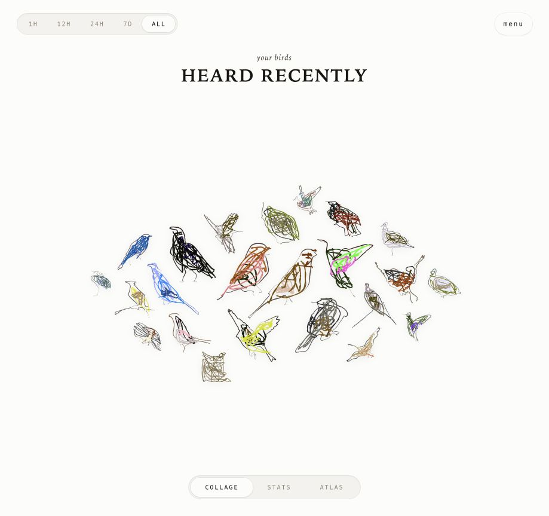
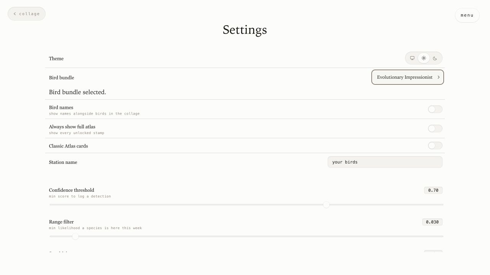
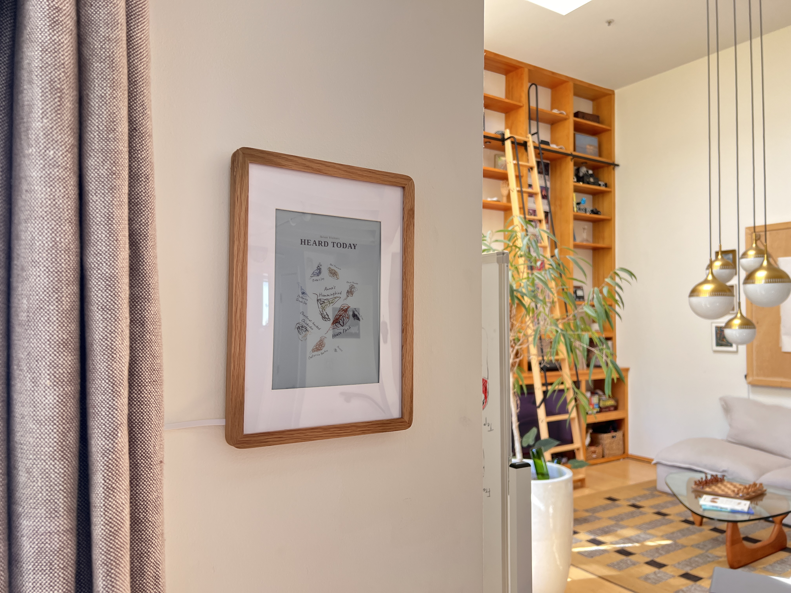

Avian Visitors v1.3 makes illustration bundles work across the station, BirdFrame, and avianvisitors.com/bundles. Browse a set, install it, or export and share your own without rebuilding Avian Visitors.

Bird bundle now lives directly below Theme in Settings. Open it to browse the same bundle list found at avianvisitors.com/bundles, search by place or bundle, and narrow the list by region.
Downloaded bundles stay at the top and carry a small download badge. Refresh local birds reapplies a changed location to the active downloaded set. The full catalog link opens in a new tab, leaving the station in place.
On phones, the catalog opens as a tall bottom sheet with a drag handle. On larger screens, it opens over Settings and keeps the station theme.

Bundle rows stay compact until opened. Each expanded row keeps the same collage and details layout, including sets with one illustration. The catalog shows the creator, coverage, style, version, license, download size, and source.
To share a set made on your station, open Tools > Your data > Export bundle. Review the local illustrations and download one upload-ready ZIP. Sign in with GitHub at avianvisitors.com/bundles, upload the ZIP, and follow its review status under Your bundles. Changes-requested and published bundles remain available there.
Uploads support archives up to 768 MiB and 1,500 PNG objects, with limits of 4 MiB per image, 640 MiB of expanded content, and 1,000 species.
Uploads stay private while file, image, and manifest checks run. Bird and style quality findings are advisory; technical checks, supported licensing, complete clean safety moderation, and explicit maintainer approval remain required. The station never uploads a bundle automatically.
After SSHing into either device, run the same command with the bundle ID copied from the catalog:
sudo avian-bundle use '<BUNDLE_ID>'Each installable row keeps Use on my local station as its main action. The adjacent command button opens this line and copies it immediately.
With a saved location, the device downloads only the bundle's birds expected there throughout the year. Without a location, it downloads the full set. Add --all-species for an explicit full download.
The installer verifies the full manifest and each selected image, then switches artwork atomically. A failed install leaves the current bundle in place. Frame captures wait for complete images before updating the panel. Repeating the command is safe.

Japanese Woodblock remains the included default. Evolutionary Impressionist adds bright, loose gestures while covering the same 333 Western North American species. Both carry the Official badge.
Evolutionary Impressionist is built on Matt DesLauriers's work, Synthetic Gestures: An Evolutionary Sketching Machine. SIREN paths evolved with sNES while CLIP compared each bird with its Japanese Woodblock cutout before human review.
The twelve cutouts used by the two official catalog collages total 3.44 MB, down from 5.60 MB. Their visible pixels, dimensions, masks, and handwritten labels are unchanged. A collage loads only when its row opens.
The station sends only its broad region to the catalog, never its latitude or longitude. Bundle files live in the managed Avian Visitors data library and stay in place during updates and reinstalls. Contributor repositories, scripts, and executables are never installed or run.
If the community catalog is unavailable, the included Japanese Woodblock set, checked official listings, and downloaded bundles remain available locally.
Use Tools > Pull latest or the documented updater. The station keeps its current illustration choice during the update.
After updating, open Settings > Bird bundle to see the current set or choose another one.
The regional collection exists because community members made artwork for places the original set did not cover: @SupraBitKid, @theskyisthelimit, @bassrelic, @RoqueAlonso, @jonnywright, @lloydalexporter, @peterdeboer-nl, @TheWillni, and @opurtell. @cdkl contributed original Eastern North American artwork later refined into the included set.
Nothing moves into the reviewed catalog automatically. Each maintainer keeps control of the files, coverage, attribution, license, style, and source link for their work. Thank you to everyone who made, shared, and tested artwork for a different part of the world.